Toda Lab Project Soka University Faculty of Engineering
研究室のOB・OG
研究室のOB・OG

|
Victor S. Kuwahara, Ph.D. |
|
Soka University, Faculty of Education Associate Professor; Researcher |
|
| My position encompasses a broad range of responsibilities including teaching science education (biology, earth science, environmental science and education, laboratory practicum’s and oceanography seminars), advising undergrad/graduate students in the Faculty of Engineering, supporting and facilitating international research collaborations, participating in Faculty Development programs, supporting the World Language Center, and of course RESEARCH! My research interests can be divided into five general categories: 1) the spatial and temporal variability of ultraviolet radiation (UVR) in temperate and tropical coastal ecosystems, 2) primary productivity and biogeochemical response to climate, episodic and oceanic variability, 3) radiative transfer in aquatic ecosystems, 4) optical sensor technologies and marine observational platforms, 5) environmental (oceanography) education. |

|
川崎 伸之, Ph.D. |
|
Faculty of Science and Biotechnology University of
Selangor (マレーシア) Associate Professor URL: http://www.unisel.edu.my/ |
|
| 環境破壊が著しい東南アジア諸国において、マレーシアを中心に河川や沿岸域に流出する有機汚染物質の汚染源の特定や、汚染源が沿岸域に及ぼす影響を調査しております。また、環境科学専攻の学生達を中心に年間6科目程度の授業を教えています。 |

私の作ったカキフライで…油っぽいところは似てますし。 |
高辻 英之 |
|
広島県立総合技術研究所水産海洋技術センター 水産研究部 副主任研究員 |
|
| 広島特産のカキの生産～流通工程における品質保持，味や機能性成分の増強・調節と高い養殖生産性・持続的利用が可能な漁場行使・養殖方法について研究しています。費用対効果の高い技術の開発が求められています。 |

|
長尾 宣夫, Ph.D. |
|
マレーシアプトラ大学バイオサイエンス研究所
主任研究員 URL: http://www.ibs.upm.edu.my/ |
|
|
光エネルギーが豊富なマレーシアで、微細藻類の大量培養技術について研究しています。現状では、微細藻類のバイオマス生産には、陸上植物よりも遥かに高いコストとエネルギーが必要です。そこで藻類を育てる栄養源を汚水からリサイクルする低コスト化/環境浄化技術や生産エネルギーを削減する新しい藻類バイオリアクターの開発に取組んでいます。
現在は、修復生態学研究室と“持続可能な養殖産業の発展を可能にする画期的な有機性汚濁物質からの栄養塩回収技術と新規藻類バイオリアクターの開発”を実施し、日本とマレーシアの国際共同研究を実施しています。
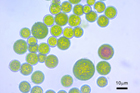
Haematococcus lacustris
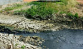
養殖産業汚泥 |
{kind=link}
{kind=link}

|
上田 敏雄 |
|
有限会社 環境・地域リサーチ研究所 主任 URL：http://www.erc-oki.co.jp/index.html |
|
| 沖縄をメインに環境という視点から計画、調査、分析、評価、予測、保全対策などを一貫して取り組み、地域における諸々の開発事業が環境に与える影響を調査・評価する環境アセスメントや戦略的アセスメントをはじめ、環境保全の視点から環境保全計画や環境管理計画の策定を行っています。 |
| 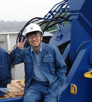 | 藤木 徹一, Ph.D. |
|
独立行政法人 海洋研究開発機構 地球環境変動領域
物質循環研究プログラム 海洋物質循環研究チーム 研究員 URL: http://www.jamstec.go.jp |
|
| 海洋生態系が物質循環に果たす役割や気候変動との関係を解明するため、日本最大級の海洋地球研究船「みらい」に乗船して研究を行っています。 |
| 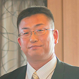 | 宮口 英夫, Ph.D. |
| 国会議員 公設秘書 | |
| 国会議員の片腕として、環境・エネルギー・海洋政策や、学校における研究教育行政に関して、今までと違った場所で自分の専門性を活かすために奮闘しています。 |

|
吉田 輝明, Ph.D. |
|
Marine Science Program, Faculty of Science and Technology,
Universiti Kebangsaan Malaysia Senior Lecturer |
|
| I'm interested in tropical marine zooplankton research, especially on the eco-physiological role of copepods in coral reefs and other coastal ecosystems around Peninsular Malaysia. If I'm not busy conducting field work, I also teach, supervise students, engage in university matters, involve in research collaborations, and scuba dive for fun. Presently, I'm involved in a joint collaboration with JSPS in understanding the ecological role of zooplankton in tropical seagrass habitats. |
| 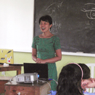 | 尾上 保子, Ph.D. |
|
サモア共和国 天然資源環境省 JICAボランティア（職種：環境教育） |
|
| 天然資源環境省廃棄物課タファイガタ埋立地で、浸出水のモニタリングや、グリーンごみを対象としたコンポスト施設の運営を担当しています。また、小学校でごみに関する出前授業を行っています。 |

|
竹田 進吾 |
|
JICAパラオ事務所 専門家（業務調整） URL： http://www.cepcrm.org |
|
| 2009年7月よりパラオ国際サンゴ礁センターへ派遣。パラオ共和国で実施の「サンゴ礁モニタリング能力向上プロジェクト」の立ち上げを実施してきました。現在は同プロジェクトで機材、短期専門家の投入、研修、ワークショップの実施、業務計画、経理など調整業務を担当しています。 |
| 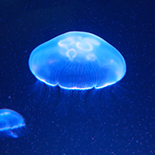 | 吉田 俊広, Ph.D. |
|
エキゾチックアクアカルチャー・代表（www.exoticaquaculture.com） キュービックアクアリウムシステムズ・アジアパシフィック代表(www.cubicaquarium.com) |
|
| 香港を拠点に主にクラゲに特化した水槽の設計、製造、販売、設置、メンテナンス業務を行っています。また、クラゲ生体の繁殖、販売、飼育技術及び器材の研究・開発を行っています。 |
| 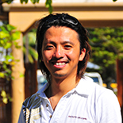 | 赤木 和義 |
| 有限会社チームブルーアース 取締役 |
|
| ダイビングショップ運営、ライセンス講習会の開催並びにツアーの開催、引率、水中ガイド、撮影業務です。 |

|
中嶋 亮太, Ph.D. |
|
独立行政法人 海洋研究開発機構 海洋生物多様性研究分野 ポストドクトラル研究員 |
|
| 海洋生態系における物質循環と生物多様性の変動メカニズムを理解するため、明るいサンゴ礁と真っ暗な深海をターゲットに日々研究しています。 URL: http://www.nakajimar.sakura.ne.jp/nakajimar/Home.html |
| Ishir Lim | |
| Energy and Climate Policy Division, Ministry of the Environment and Water Resources, Singapore. | |
| My work revolves around developing climate change related policies with a focus on adaptation and resilience. |
| 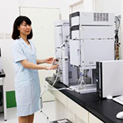 | 福嶋 和代 |
| （株）渡辺オイスター研究所 学術部 |
|
| 牡蠣肉エキスの機能性について、研究を行っています。 天然物解析や臨床試験などによって得られた研究成果を学術論文に編纂し、国内外の学会にて発表しています。 |

|
沖汐 勇樹 |
| バークレイズ証券 エクイティアナリスト |
|
| 投資銀行ので株式調査部でアナリストをしております。 市場調査や企業分析を行い機関投資家に投資アイデアを提供するのが仕事です。 |
| 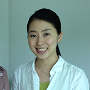 | 河合 実名子, Ph.D. |
|
特定非営利活動法人 APEX（Asian People’s Exchange） 海外事業コーディネーター |
|
| インドネシア・スルポン（ジャカルタ近郊）に駐在しながら働いています。2014年から開始しているSATREPS事業（JICAとJSTが共同実施するプロジェクト）が担当です。インドネシアの潤沢なバイオマスをガス化し、得られた原料ガスを用いて液体燃料を生産することが目的です。ガス化や液体燃料生産について、一から学びながら、現地の人との連携を大切に、事業を進めています。実験、設計、交渉、経理、論文執筆と、出来ることは何でもやります。研究室での生活が、役に立っていると実感する毎日です。 |
| 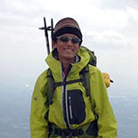 | 緒方 光明 |
|
一般財団法人自然公園財団 日光市部 自然解説員 |
|
| 栃木県・日光国立公園にて、ビジターセンター等の維持、管理、運営業務を行っています。また、奥日光を訪れた修学旅行生や一般来訪者向けに奥日光の自然景観や生態系について解説するネイチャーガイド業務も行っています。得意分野は水生生物と菌類です。 |
| 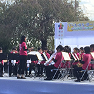 | 山崎 春華 |
| 愛知県高等学校教諭(理科) | |
| 2014年4月より、愛知県の公立高校で理科の教員として勤務しています。担当科目は主に生物。吹奏楽部の顧問でもあります。近年益々専門知識と国際性が求められている高校教育において、大学院で培った知識と経験は、教科指導や進路指導など、様々な場面で活かされています。 |